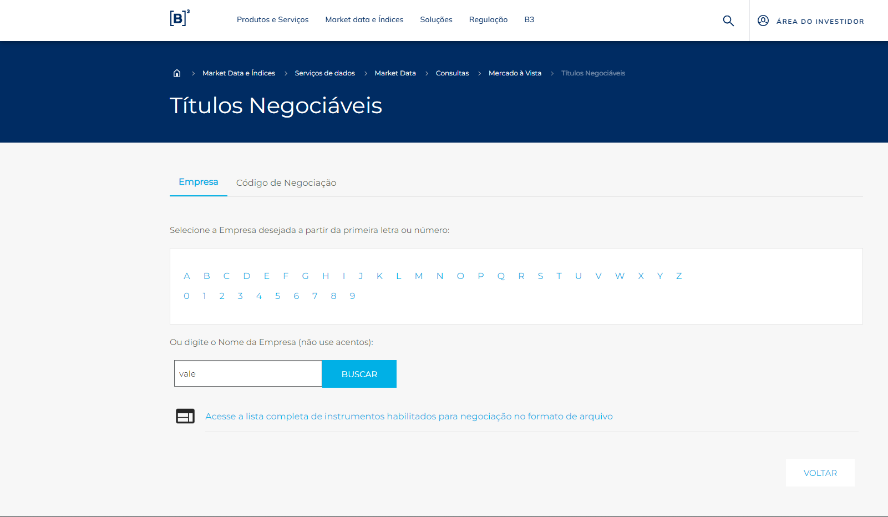
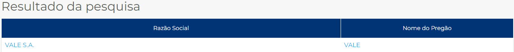
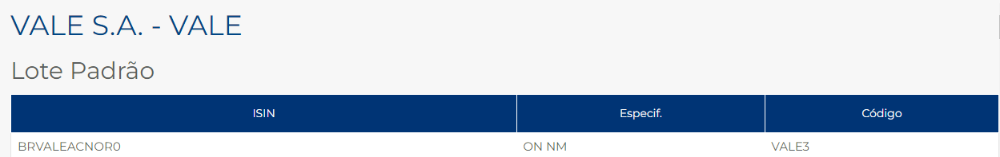

Renda Variável
O que é uma ação?
- É a menor parte da empresa
- Se for comprado uma ação de uma companhia a pessoa se torna sócio dela
- Se a empresa tem lucro, o acionista também tem
- Mas também corre os riscos da companhia
Nem toda a empresa tem ações na bolsa, a cerca de 340 empresas com ações em circulação.
Empresas com ações se chamam Capital Aberto.
Quando uma empresa deseja se tornar com Capital Aberto
Com isso o primeiro sócio ou dono da companhia faz venda de parte da empresa aberta ao público se tornando assim o Mercado Primário.
As demais negociações como venda comum de ações se chama Mercado Secundário.
IPO(Inicial Public Offering) → Oferta Pública Inicial
Entrada e Saída
Quando uma empresa tem Capital Fechado é um processo muito mais difícil e demorado se tornar acionista pois precisa passar por um processo burocrático.
Já quando ela é de Capital Aberto se torna muito mais simples e rápido, com alguns cliques já consegue se tornar acionista.
Assim ações são um meio muito vantajoso pois a pessoa consegue fazer mudanças bem rápidas de entrar ou sair das companhias.
Informações Importantes
Antes de sair comprando ações é Importantes se informar:
- Qual setor a empresa atua
- Empresas do mesmo setor (para comparar as ações)
Sites
Confere as ações de empresas de cada setor da economia:
SITE
Informações sobre volume das empresas: VOLUME
Benefícios de Lucro com Ações
Existe 2 formas de lucrar:
- Valoriazação → Através de valorização de preço, onde você compra uma ação e ela valoriza então a pessoa vende, gerando assim lucro.
- Benefícios:
- Dividendos (forma mais comum além da valorização de ações)
- São partes do lucro que a empresa divide com os acionistas, por lei a empresa precisar pagar ao menos 25% dos lucros
- A grande vantagem de dividendos é que não há cobranças de imposto de renda, ou seja isento de IR
- No entanto só há dividendos se a empresa gerar algum lucro
- Juros sobre Capital Próprio
- Esse benefício não é isento de imposta de renda
- Mas o pagamento é feito de forma automática, ou seja é retido na fonte
Formas de procurar sobre informações de Benefícios
- Site da Bovespa: BOVESPA
- Sites e Relação com o Investidor (RI) / Ex: Petrobrás
- Mais trabalhoso pois precisa acessar o site de cada empresa
- Alguns apresentam informações e ferramentas interessantes
- Acompanhar o pagamento dos proventos direto no extrato da corretora
Proventos Declarados: Pagos e a Pagar - Petrobras
Tipos de Ações
- Ordinárias (ON)
- Concedem direito a voto nas assembleias da companhia
- Ou seja, só um investidor que possui uma quantidade considerável de ações
- Preferenciais (PN)
- Dão preferência no recebimento de dividendo pago
- Pagam 10% a mais do que as ordinárias (10% > ON)
- Para o pequeno investidor que não terá direito a voto com tão poucas ações, vale mais a pena ter ações preferenciais
- Ela tem um volume maior de negociação do que as ordinárias (ON)
- Units
- Conjunto de ações negociadas como pacote
- Ex: Klabin e Sanepar = 1ON e 4 PN
Santander = 1 ON e 1 PN
Sul América = 1 ON e 2 PN
Ticker
O que é?
É um código da ação e é importante saber o ticker de cada ação caso queira negociar
Código usado para negociar
- 4 LETRAS +1 ou 2 números
- 3 → ON
- 4,5 e 6 → PN
- 11 → UNITS
Exemplo
- Petrobrás ON → PETR3
- Bradesco PN → BBDC4
- Usiminas PN → USIM5
- Eletrobrás PN → ELET6
- Klabin Unit → KLBN11
O local para encontrar o nome do ticker é o site da Bovespa:
TICKEREx: Vale
  Todo o Ticker é negociado por Lote
- Normalmente em lotes de → 100 Ações
Fora do Lote
- Se a pessoa não tem como comprar um lote inteiro, pode negociar fora do lote no que chamam de fracionário
- Para isso é só incluir a letra F no fim do ticker
- O fracionário tem menos negociações